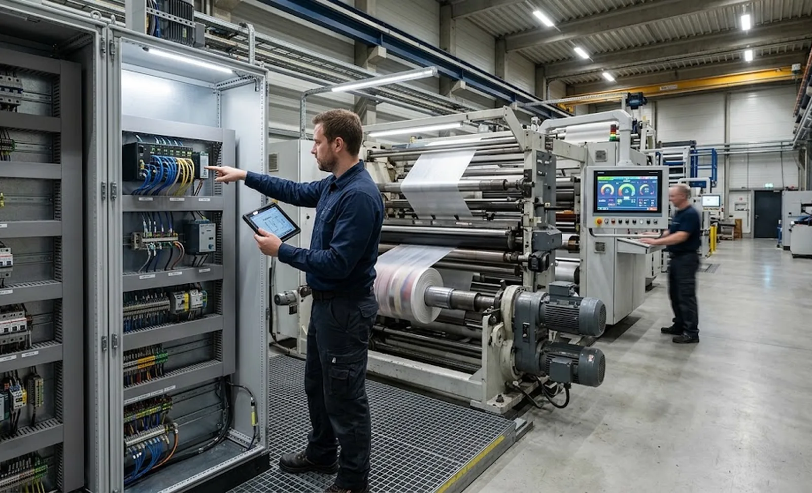

Published October 1, 2026 | By HDPTH Technical Editorial Team

Ten years ago a slitter rewinder was a closed box. Today the same machine streams counters to your data logging and ERP systems, receives recipes from the line network, supports remote diagnostics and IoT monitoring, and often runs a Windows-based HMI with USB ports on the front panel. Every one of those capabilities is worth money — and every one is a door. Ransomware groups care that the production floor is reachable from the office network, and that encrypted controllers can idle an entire line for days. This guide translates cybersecurity into buyer language: what to specify, what to verify at acceptance, and what to maintain over the machine’s life.
Mapping the attack surface of a modern converting line
Before writing requirements, know where the doors are. The realistic exposure points:
- The HMI: usually a Windows panel PC — default passwords, unpatched operating systems and writable USB ports make it the most common entry point.
- Remote-access channels: VPN routers and gateways installed at commissioning and never reviewed; permanent tunnels with shared credentials are the worst habit in industrial networks.
- Flat networks: PLC, office PCs, printers and cameras in one broadcast domain, so one infected laptop reaches the line directly.
- Data connections: OPC UA, MQTT or database links to MES — legitimate, but unauthenticated if left unconfigured.
- Legacy components: drives and controllers whose firmware stopped receiving updates, often reused in a retrofit project.
Security requirements to write into the RFQ
Cybersecurity becomes real when it appears in the specification with the same status as speed and tension performance. The core set:
- Accounts and access: unique named accounts with role-based HMI permissions — operator, setter, maintenance, engineering — with forced password change on first login.
- No default credentials: on HMI, PLC, gateway, drives and network devices; the supplier documents every credential and handover procedure.
- Network architecture: a documented drawing of every port, protocol and connection, so the machine can sit in a production zone segmented from office IT by a firewall — IEC 62443’s zones-and-conduits model at plant level.
- Remote access: a mediated gateway architecture, not an open tunnel.
- Logging and integrity: logins, failed logins and configuration changes recorded and time-synchronised, plus version records for control programs to detect unauthorised changes.
- Update commitment: a written statement of how long security updates will be provided, how vulnerabilities are notified, and how patches install without a service visit.
Ask the supplier to state the IEC 62443 capability of the control components — you need to know what the embedded security actually supports.
| Requirement | What to ask the vendor | Verify at |
|---|---|---|
| Role-based HMI accounts | Account model, permissions, password policy | SAT functional test |
| No default passwords | Credential handover procedure for all devices | Commissioning handover |
| Network architecture | Port and protocol list, wiring drawing | Quotation + SAT |
| Remote access gateway | Architecture, authentication, session logging | First support session |
| Security logging | Event list, retention, time sync source | SAT |
| Update commitment | Support duration, notification, patch method | Contract review |
| IEC 62443 capability | SL level of control components, evidence | Quotation |
Remote access done right
Remote support remains one of the best productivity features of a modern line — the economics described in our remote diagnostics guide only work if engineers reach the machine quickly. The secure pattern keeps the benefit and closes the exposure: a remote-access gateway installed in your plant, owned by you, which requires named credentials, opens only during an active session you approved, restricts the connection to the machine’s own segment, and logs every session. Review the access list quarterly and remove anything permanent.
Security over the machine’s life
Security is not delivered once at commissioning; it decays without maintenance. Three habits keep a connected machine defensible for its long service life. First, patching discipline: schedule the supplier’s firmware and HMI updates into planned maintenance windows, and track operating-system support status — a Windows version approaching end of support belongs in capital planning, like any retrofit decision. Second, change control: every integration project — new MES link, new dashboard, new camera — re-opens the architecture, so each one ends with the network drawing and firewall rules updated. Third, incident readiness: a one-page procedure saying who disconnects what, who calls the supplier and how the machine is restored from backup, tested annually.
Specifying a connected machine with security in mind?
HDPTH documents the network architecture, access model and update commitments for every machine we ship. Send your connectivity requirements and we will quote a configuration your IT team can approve.
Submit Your Project InquiryQuestions to put to every vendor
- Can you provide the machine’s complete network architecture — every port, protocol and external connection — during quotation?
- What IEC 62443 capability do the control components carry, and which devices are certified?
- How does your remote support access work, and can it run through a customer-owned, session-based gateway?
- For how many years will you provide security updates and vulnerability notifications, and how are patches applied?
Frequently asked questions
Why would anyone attack a slitter rewinder?
Attackers rarely target the machine itself — they target the network it sits on. A connected slitter rewinder with a Windows-based HMI, remote-access gateway and flat network connection is an entry point into the plant: ransomware that encrypts office PCs reaches the production floor through the same path, and encrypted machine controllers can stop an entire converting operation for days. Even without a targeted attack, remnant malware, USB sticks and default passwords create accidental downtime. Machine cybersecurity is therefore about protecting production availability and the plant network.
What is IEC 62443 and does it apply to slitter rewinders?
IEC 62443 is the international standard series for industrial automation and control system security. It defines security levels from SL 1 (protection against casual misuse) to SL 4 (protection against state-level adversaries), applying both to plant operators building zones and conduits and to suppliers whose components can be certified to those levels. For a slitter rewinder, asking the supplier to state which control components carry which SL level, and what the machine assumes from your network, applies the standard without you becoming a security engineer.
How should remote access to the machine be managed?
Remote access is genuinely useful for diagnostics and support, but it must be mediated, logged and time-limited. The strongest pattern is a remote-access gateway inside your plant network that requires user authentication, grants the supplier access only to the machine’s own network segment, records each session, and is switched on per session rather than permanently available. Permanent open VPN tunnels installed at commissioning and forgotten afterwards are the most common weak point on converting lines. Define remote-access rules before commissioning.
Who applies security patches — us or the machine supplier?
Both, with a clear split. The supplier is responsible for the machine’s software stack — firmware, PLC programs, HMI software and embedded components — including vulnerability notifications and released patches. You are responsible for applying updates within a maintenance window and for the surrounding infrastructure: gateway, switches and firewall rules. The contract should state how long security updates will be provided, how you will be notified, and that routine patches must not require a service visit. End-of-life operating systems need a written migration path.
What cybersecurity requirements belong in the RFQ?
Write requirements in the same style as speed or tension specifications. The core set: unique user accounts with role-based access on the HMI, no default passwords anywhere, a documented list of ports and protocols supporting network segmentation, a mediated remote-access architecture, security logging, a stated IEC 62443 capability level for control components, a software-update and vulnerability-notification commitment for a defined period, and restoration media with documented backup procedures. Ask for the machine’s network architecture drawing during quotation — a supplier who cannot produce one cannot manage the attack surface.
Sources
- IEC 62443: industrial automation and control system security — the reference standard for machine and plant security levels
- NIST SP 800-82 Rev. 3: operational technology security for industrial control systems
- EU Machinery Regulation (EU) 2023/1230: cybersecurity duties for machinery with digital communication
- ISO/IEC 27001: information security management — the plant-level framework the machine security plan plugs into